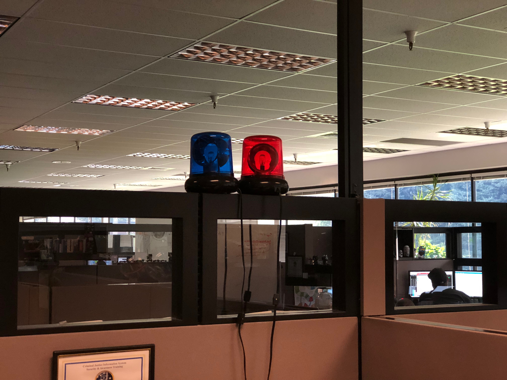

What to do if you get a call and suspect a system down/critical issue
Fill out this Google Form to help determine if it's a system down. (if you're pretty sure it's down, I.E. users can't login, skip to the next step and inform the escalated tech the form has not been filled out)
Open FormResponses to this form can be viewed here.
If it is determined to be a system down or critical issue, alert an escalated support tech or solutions architect and confirm that it is a critical issue/system down with them. If it is confirmed, begin the process of transfering the call and/or screenshare to them. Also post in Tech Support, and specify the agency that is down and the escalated rep that it is being transfered to.
Note: At this point the person that answered the phone call should create a case, set themselves as the lead support tech and send the CaseID to the escalated working the case. The support rep should then disengage with the issue until notified by the escalated support rep.
The Escalated support rep should then turn on the alert lights. The red light is for JustWare, and the blue light is for eCourt.
The Escalated tech should then create a google document and start making a timeline, with what has been tried/learned and when (this will evolve into the Post mortem document after the call is finished) . This document should then be posted in #LoganDevSupport with an @channel. This will insure that development will know the status of the issue. The post should also outline the problem they are experiencing, the current status of the issue and what resources are needed from development
As the call progresses any major additional information/notes should be added to the document timeline. This will help keep everyone informed as the issue progresses. Also if there is any new places that help is needed or major revalations (such as a more definitive error message), another post in #logandevsupport (without an @channel) is never a bad idea.
After the solution is put into place, the Escalated rep should then turn the google document into the official post mortem document (copy template from here). If the case is solvable at this point, it should be solved out by the escalated rep. If there is any follow up that needs to happen, then the original support tech will be put in charge of following up with the customer.
Once the post mortem is finished, an email should be sent out with the Google Doc share link. Include:
The link should also be added to this Post mortem Index google sheet.